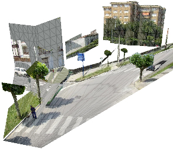
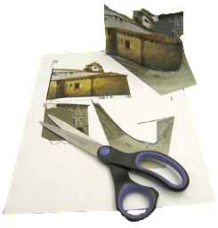

| now in 3D! |
|
Click on one of the icons to download the appropriate model for the labeled image:
|  |  | View 3D | Download 3D files | 3D book |
| If VRML browser plugin is installed | Save 3D files | Make your own pop-up book! |
Note
If the above links do not work, do not worry. This may be due
to one of the following reasons:
1. The system needs some time to generate the files
(especially for the pop-up book).
Please wait a moment for the system to finish producing
the files and click on the link again.
2. The 3D model starts to be produced when there are at least 5
labeled objects. Also, the following labeling
guidelines may be useful. Please continue labeling and try again.
To view the 3D model
Windows (Firefox or IE browsers only):
1. Install a VRML viewer plugin (we tested Cortona and Cosmo).
2. View the 3D model.
Mac (Firefox browsers only):
1. Install a VRML viewer (try Octaga,
FreeWRL, or
Cortona).
2. Download the 3D files.
3. After the download finishes, unzip the files and double-click on
the .wrl file.
Linux (Firefox browsers only):
1. Install a VRML viewer (try OpenVRML.org).
2. Download the 3D files.
3. After the download finishes, unzip the files and double-click on
the .wrl file.
Navigating the 3D model
While you are in the VRML viewer, you may zoom, rotate, and translate the 3D scene. Most VRML viewers will have a navigation panel at the bottom of the viewer. Please consult your VRML viewer's documentation for more information.
Make your own 3D pop-up book!
You can have fun away from your computer. Simply:
1. Download the 3D template (if the link is
broken, it means that the book has not been generated yet; please wait
a few minutes and try again).
2. Cut out the pieces.
3. Affix the color-coded tabs to the matching color pattern in the ground
pieces.
4. Voila! You have your 3D scene.
Disclaimer: LabelMe and the Massachusetts Institute of Technology have no liability of any kind or nature in connection with your use of the LabelMe software, including liability for any consequential or incidental damages or damage to your computer hardware or software or self (with the latter possibly resulting from the construction of the 3D pop-up book - be careful, scissors are sharp!), and the entire risk of use (including without limitation any damage to your computer hardware or software) resides with you.
You expressly agree that the use of LabelMe and the internet is at your sole risk. LabelMe is provided on an "as is" and "as available" basis for your use, without warranties of any kind, either express or implied, unless such warranties are legally incapable of exclusion. LabelMe provides the service on a reasonable basis and does not guarantee that you will be able to access or use the service at times or locations of your choosing, or that LabelMe will have adequate capacity for the service as a whole or in any specific geographic area.
© 2008 Massachusetts Institute of Technology, all rights reserved.